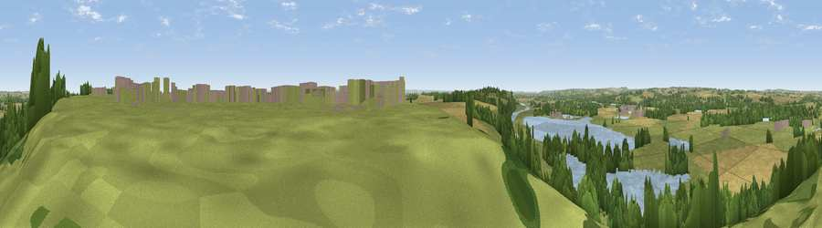

Viewpoint near Kneeton
#19238 in England · top 14% of its area beats it · near KneetonWhere it is
The exact computed spot (SK 72225 47775). Click the marker for map links.
The view, rendered

A 360° render of this exact spot computed from the terrain model, tree cover and land cover — summer colours, afternoon light, calibrated against photographs of famous viewpoints. Real trees, hedges and buildings will differ in detail.
The panorama
Grey silhouette: terrain skyline in each direction (720 bearings, Earth curvature and refraction included). Dashed green: skyline with trees (+15 m) and buildings (+8 m) as obstacles. Blue strip: how far the ground is visible on each bearing.
Where the view opens
Wedge length = distance to the farthest visible ground on that bearing (vegetation-aware). Rings at 10, 25 and 50 km.
What fills the view
40% grassland · 27% cropland · 20% water · 12% woodland · 2% built-up
Angular shares of the visible panorama (visual magnitude), not map area. Landscape diversity 0.59 (0–1 Shannon).
Key numbers
More beautiful places nearby
The staircase of upgrades: each row has a higher view potential than everything closer. Driving times are estimates from straight-line distance, calibrated against real road routing — check an actual route before setting out.
| Place | Direction | Drive | Score |
|---|---|---|---|
| Viewpoint near Kneeton | SW · 3 km | ~7 min | 61.5 |
| Viewpoint near Arnold | W · 13 km | ~23 min | 64.1 |
| Viewpoint near Belvoir | SE · 17 km | ~30 min | 70.8 |
| Crich Stand | WNW · 38 km | ~57 min | 73.0 |
| Viewpoint near Woodhouse Eaves | SSW · 39 km | ~58 min | 77.7 |
| Viewpoint near Mow Cop | W · 87 km | ~111 min | 78.9 |
| Viewpoint near Mow Cop | W · 87 km | ~111 min | 80.2 |
| Viewpoint near Little Wenlock | WSW · 115 km | ~140 min | 84.2 |
53.02241, -0.92469 · source: screening · position refined by local search. Computed location — check access rights before visiting.